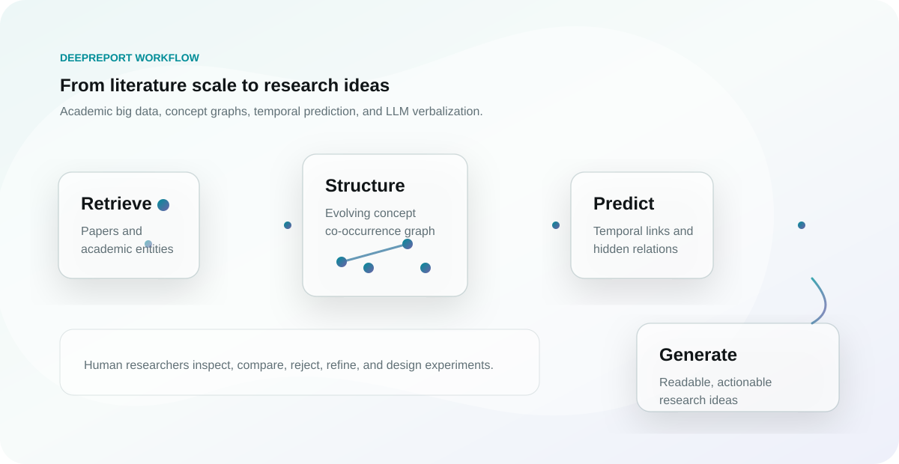

DeepReport 是一个面向科学研究的 AI 辅助想法生成系统。它试图解决一个越来越现实的问题：论文增长速度远远快于研究者能够阅读、整理和联想的速度，尤其是在跨学科研究中，真正有价值的连接常常藏在不同领域的概念之间。

DeepReport 做什么
从产品视角看，DeepReport 提供论文检索、洞察抽取、概念探索、知识总结和想法生成等功能。它不是简单地把若干论文摘要拼接起来，而是把“研究想法”拆成两个阶段：先发现概念之间未来可能产生联系的位置，再用大语言模型把这种结构化线索组织成可读、可讨论、可继续验证的研究叙述。
论文 DeepReport: An AI-assisted Idea Generation System for Scientific Research 已被 SIGIR 2025 demo track 收录。论文中描述的核心路线是：在超过 2.6 亿篇跨学科出版物上维护动态概念共现图，周期性更新概念与连接，再结合时间链接预测、图分析和大语言模型，把潜在的跨领域连接转化为更具体的研究想法。

为什么它有意思
科研中的“新想法”往往不是凭空出现的。它通常来自三类操作：发现两个原本分散的概念之间存在可解释联系；判断这种联系是否正在变强、是否具有时间趋势；最后把这个联系放回具体领域问题中，形成可执行的假设或实验方向。DeepReport 的价值正在于把这三步做成系统化流程。
这也解释了为什么它适合放在学术大数据和知识图谱的交叉处：图结构负责保存概念关系和历史变化，时间预测负责寻找可能的新连接，LLM 则负责把机器发现的结构翻译成人能继续推敲的语言。对研究者来说，这种工具更像一个“高密度文献雷达”，它可以降低探索成本，但仍然把判断、取舍和实验设计留给人。
可以从哪里开始
如果你想快速了解系统，可以先打开 DeepReport Demo；如果你更关心学术背景，可以阅读 ACM PDF。相关项目简介也整理在 个人主页的 DeepReport 部分。
我个人更期待它在两个方向上的延展：一是让研究者能够围绕一个概念持续追踪新连接，而不是每次从搜索框重新开始；二是把生成的想法与证据链、反例和可复现实验计划绑定起来，让“想法生成”真正进入科研工作流，而不只是停留在灵感阶段。